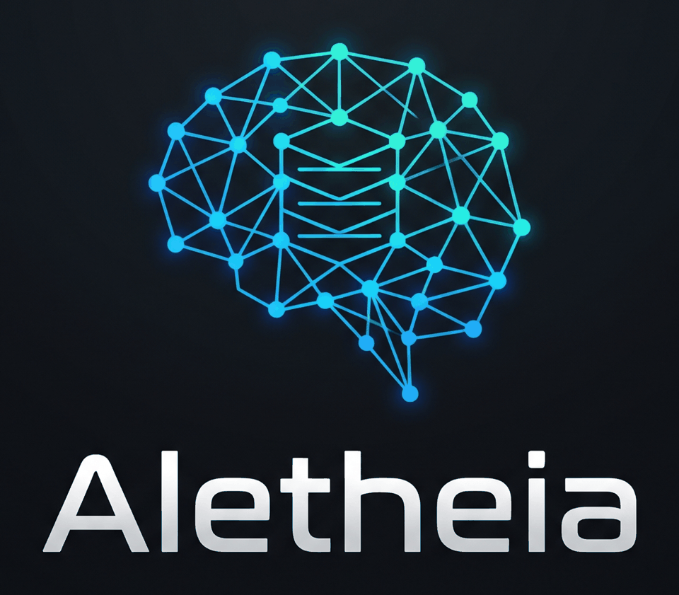

One memory for every AI coding tool.
Aletheia is a free, local memory and rules hub. Your tools read and write the same store over MCP, REST or a CLI. Write your rules once and sync them into each tool's own instruction file. Export everything and move on whenever you like.

What it does
A small local server, a CLI and an MCP server over one SQLite file. No account, no telemetry, loopback only.
Memory
Search, filter, pin, edit and delete. Observations, summaries, prompts and notes, with full-text search and optional local embeddings.
Rules, written once
Sync one rule set into CLAUDE.md, AGENTS.md, GEMINI.md, Cursor, Windsurf, Copilot and Aider files. A managed block, so your own text is never touched. Preview and backup first.
Connect tools
Detect installed tools and write the MCP config for each, with a preview and a backup before any write.
Easy to leave
Export a versioned bundle or Markdown. Import a bundle, or import from claude-mem (read-only, repeatable). Importing twice does not duplicate.
Private by default
Secrets and <private> blocks are removed before anything is stored. Optional LLM features are off until you choose a provider.
My Work view
A re-implementation of claude-mem's "My Work" page (request cards, goals, rules, build story). It reads claude-mem's database read-only.
Measured, not claimed
Retrieval on LoCoMo (1,536 questions with gold evidence) against claude-mem 15.2.0 as shipped. Retrieval only: answer accuracy is not measured yet.
| Run | Questions | Recall@5 | MRR | ms/query |
|---|---|---|---|---|
| claude-mem 15.2.0 (as shipped), raw turns — measured-by-us | 1,536 | 36.0% | 0.285 | p50 1,699 ms, p95 2,824 ms (idle, 40 queries) |
| Raw turns, all 10 conversations | 1,536 | 57.4% | 0.497 | 3.72 |
| Dataset facts, all 10 | 1,536 | 64.8% | 0.591 | 5.53 |
| Dataset facts, 3 conversations | 383 | 67.4% | 0.620 | 5.80 |
| Dataset facts, 3 conversations, + rerank | 383 | 73.9% | 0.686 | 251.16 |
| Dataset facts, all 10, + rerank | 1,536 | 72.3% | 0.680 | 646.19 |
| Our rule-extracted facts, all 10 | 1,536 | 57.7% | 0.492 | 4.94 |
Retrieval only: Recall@5 asks whether the gold evidence is in the top five results. It is not answer accuracy. Every row is measured-by-us on the same LoCoMo questions; no vendor-claimed benchmark number is in this table. Generated from bench/results/2026-10-26/ (bench/claude-mem-baseline.mjs, raw-turns.json (hybrid), dataset-facts.json (hybrid+facts), dataset-facts-3-rerank.json (hybrid+facts), dataset-facts-3-rerank.json (hybrid+facts+rerank), dataset-facts-rerank.json (hybrid+facts+rerank), our-facts-rules.json (hybrid+facts)); re-run with bun scripts/compare-bench.mjs.
Which tools it connects to
Aletheia is tool-neutral by design: open MCP protocol, a plain REST API, a CLI, and each tool's own instruction file. This is what has actually been checked.
| Tool | Level | Verification | Hook events installed |
|---|---|---|---|
| claude-code | full | config written from docs, not tested on a real install | SessionStart, UserPromptSubmit, PostToolUse, Stop, SessionEnd |
| command-code | full | config written from docs, not tested on a real install | SessionStart, PostToolUse, Stop |
| cursor | full | config written from docs, not tested on a real install | sessionStart, beforeSubmitPrompt, postToolUse, afterAgentResponse, stop, sessionEnd |
| codex | full | config written from docs, not tested on a real install | SessionStart, UserPromptSubmit, PostToolUse, Stop, SessionEnd |
| gemini-cli | full | config written from docs, not tested on a real install | SessionStart, BeforeAgent, AfterTool, AfterAgent, SessionEnd |
| windsurf | full | config written from docs, not tested on a real install | pre_user_prompt, post_run_command, post_write_code, post_cascade_response |
| opencode | mcp+rules | config written from docs, not tested on a real install | none (MCP and rules only) |
Generated from src/hub/install.mjs via aletheia install --list. A row says tested on a real install only when that column says so; today none do.
Quick start
Needs Bun 1.1 or newer. No npm dependencies.
git clone https://github.com/mohamed-ashraf-elsaed/aletheia-mem
cd aletheia-mem
bun test # 115 tests
bun bin/aletheia-server.mjs # http://localhost:37790 (My Work) and /hub (Memory Hub)bun bin/aletheia.mjs import claude-mem # bring claude-mem memory in (read-only)
bun bin/aletheia.mjs search "retry"
bun bin/aletheia.mjs rules add "Run the tests before saying a task is done"
bun bin/aletheia.mjs rules sync --tools codex,cursor,claude-code --dir /path/to/project # preview
bun bin/aletheia.mjs connect cursor # preview the MCP configFAQ
Is it really free?
Yes. Apache-2.0, no account, no hosted tier, no telemetry. Optional LLM features call the model you configure, and only then.
How is it different from claude-mem?
claude-mem is also open source (Apache-2.0) and has far more features, including per-tool installers, a live viewer and a smart file reader. Aletheia is smaller and tool-neutral: one store for any tool, rules sync, and migration both ways. The README lists what is missing under Limits and unverified claims.
Does it replace claude-mem?
No. It runs beside it on its own port and never writes to claude-mem's database.
Where is my data?
In ~/.aletheia/hub.db on your machine. Nothing leaves it unless you turn on an LLM provider or share an export.
Does it work with my tool?
If your tool speaks MCP or reads an instruction file, probably. See the table above for what is tested. The honest answer for a real install is "not tested yet".